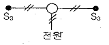
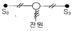
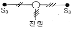
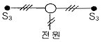

전기기능사 (2010-10-03 기출문제)
1과목: 전기 이론
1. 전기 분해에 의해서 구리를 정제하는 경우, 음극선에서 구리 1kg를 석출하기 위해서는 200A의 전류를 약 몇 시간[h] 흘려야 하는가?(단, 전기 화학 당량은 0.3293 × 10-3[g/C]임)
- 2.11[h]
- 4.22[h]
- 8.44[h]
- 12.65[h]
(정답률: 47%)

2. 도체가 운동하는 경우 유도 기전력의 방향을 알고자 할 때 유용한 법칙은?
- 렌츠의 법칙
- 플레밍의 오른손 법칙
- 플레밍의 왼손 법칙
- 비오-사바르의 법칙
(정답률: 57%)
3. 어떤 도체에 1A의 전류가 1분간 흐를 때 도체를 통과하는 전기량은?
- 1[C]
- 60[C]
- 1000[C]
- 3600[C]
(정답률: 71%)
4. 성형 결선에서 상전압이 115V인 대칭 3상 교류의 선간 전압은?
- 약 100[V]
- 약 150[V]
- 약 200[V]
- 약 250[V]
(정답률: 70%)
5. 100V에서 5A가 흐르는 전열기에 120V를 가하면 흐르는 전류는?
- 4.1[A]
- 6.0[A]
- 7.2[A]
- 8.4[A]
(정답률: 76%)
6. 주파수 100Hz의 주기는?
- 0.01[sec]
- 0.6[sec]
- 1.7[sec]
- 6000[sec]
(정답률: 79%)
7. 자체 인덕턴스가 40mH와 90mH인 두 개의 코일이 있다. 두 코일 사이에 누설자속이 없다고 하면 상호 인덕턴스는?
- 50[mH]
- 60[mH]
- 65[mH]
- 130[mH]
(정답률: 47%)
8. "물질 중의 자유전자가 과잉된 상태" 란?
- (-)대전상태
- 발열상태
- 중성상태
- (+)대전상태
(정답률: 82%)
9. 임피던스 Z=6+j8[Ω]에서 컨덕턴스는?
- 0.06[℧]
- 0.08[℧]
- 0.1[℧]
- 1.0[℧]
(정답률: 39%)
10. 등전위면과 전기력선의 교차 관계는?
- 30°로 교차한다.
- 45°로 교차한다.
- 직각으로 교차한다.
- 교차하지 않는다.
(정답률: 77%)
11. 최대값이 200V인 사인파 교류의 평균값은?
- 약 70.7[V]
- 약 100[V]
- 약 127.3[V]
- 약 141.4[V]
(정답률: 51%)
12. 두 금속을 접속하여 여기에 전류를 통하면, 줄열 외에 그 접점에서 열의 발생 또는 흡수가 일어나는 현상은?
- 펠티에 효과
- 지벡 효과
- 홀 효과
- 줄 효과
(정답률: 81%)
13. 공기 중에서 자기장의 세기가 100AT/m인 점에 8 × 10-2Wb의 자극을 놓을 때 이 자극 에 작용하는 기자력은?
- 8 × 10-4[N]
- 8[N]
- 125[N]
- 1250[N]
(정답률: 59%)
14. 교류 회로에서 전압과 전류의 위상차를 θ[rad]라 할 대 cos θ는?
- 전압 변동률
- 왜곡률
- 효율
- 역률
(정답률: 73%)
15. R-L 직렬회로에서 R=20Ω, L=10H인 경우 시정수 는?
- 0.0⑤[s]
- 0.5[s]
- 2[s]
- 200[s]
(정답률: 48%)
16. 정전 용량(electrostatic capacity)의 단위를 나타낸 것으로 틀린 것은?
- 1[pF] = 10-12[F]
- 1[nF] = 10-7[F]
- 1[μF] = 10-6[F]
- 1[mF] = 10-3[F]
(정답률: 71%)
17. 길이 2m의 균일한 자로에 8000회의 도선을 감고 10mA의 전류를 흘릴 때 자로의 자장의 세기는?
- 4[AT/m]
- 16[AT/m]
- 40[AT/m]
- 160[AT/m]
(정답률: 59%)
18. 도체의 전기저항에 대한 설명으로 옳은 것은?
- 길이와 단면적에 비례한다.
- 길이와 단면적에 반비례한다.
- 길이에 비례하고 단면적에 반비례한다.
- 길이에 반비례하고 단면적에 비례한다.
(정답률: 69%)
19. 공기 중에서 3 × 10-5[C]과8 × 10-5[C]의 두 전하를 2[m]의 거리에 놓을 때 그 사이에 작용하는 힘은?
- 2.7[N]
- 5.4[N]
- 10.8[N]
- 24[N]
(정답률: 66%)
20. 자기저항의 단위는?
- [AT/m]
- [Wb/AT]
- [AT/Wb]
- [Ω/AT]
(정답률: 75%)
2과목: 전기 기기
21. 동기조상기를 부족여자로 운전하면?
- 콘덴서로 작용
- 뒤진역률 보상
- 리액터로 작용
- 저항손의 보상
(정답률: 67%)
22. SCR의 애노드 전류가 20A로 흐르고 있었을 때 게이트 전류를 반으로 줄이면 애노드 전류는?
- 5[A]
- 10[A]
- 20[A]
- 40[A]
(정답률: 40%)
23. 동기조상기가 전력용 콘덴서보다 우수한 점은?
- 손실이 적다
- 보수가 쉽다.
- 지상 역률을 얻는다.
- 가격이 싸다.
(정답률: 55%)
24. 3상 전파 정류회로에서 전원이 250V라면 부하에 나타나는 전압의 최대값은?
- 약 177[V]
- 약 292[V]
- 약 354[V]
- 약 433[V]
(정답률: 22%)
25. 직류 전동기의 회전 방향을 바꾸려면?
- 전기자 전류의 방향과 계자 전류의방향을 동시에 바꾼다.
- 발전기로 운전시킨다.
- 계자 또는 전기자의 접속을 바꾼다.
- 차동 복권을 가동 복권으로 바꾼다.
(정답률: 64%)
26. 변압기를 △-Y로 결선을 할 때 1, 2차 사이의 위상차는?
- 0°
- 30°
- 60°
- 90°
(정답률: 58%)
27. 동기 발전기의 역률 및 계자 전류가 일정할 때 단자 전압과 부하 전류와의 관계를 나타내는 곡선은?
- 단락 특성 곡선
- 외부 특성 곡선
- 토크 특성 곡선
- 전압 특성 곡선
(정답률: 47%)
28. 농형유도 전동기의 기법과 가장 거리가 먼 것은?
- 기동보상형기법
- 2차저항 기동법
- 전전압 기동법
- Y-△ 기동법
(정답률: 63%)
29. 극수가 10, 주파수가 50Hz인 동기기의 매분 회전수는?
- 300[rpm]
- 400[rpm]
- 500[rpm]
- 600[rpm]
(정답률: 63%)
30. 변압기의 정격 1차 전압이란?
- 정격 출력일 때의 1차 전압
- 무부하에 있어서의 1차 전압
- 정격 2차 전압 × 권수비
- 임피던스 전압 × 권수비
(정답률: 50%)
31. 변압기, 동기기 등의 층간 단락 등의 내부 고장 고장 보호에 사용되는 계전기는?
- 차동 계전기
- 접지 계전기
- 과전압 계전기
- 역상 계전기
(정답률: 70%)
32. 변압기에 콘서베이터(conservator)를 설치하는 목적은?
- 열화 방지
- 코로나 방지
- 강제 순환
- 통풍 장치
(정답률: 71%)
33. 변류기 개방시 2차측을 단락하는 이유는?
- 2차측 절연보호
- 2차측 과전류 보호
- 측정오차 감소
- 변류비 유지
(정답률: 43%)
34. 권수비가 100인 변압기에 있어서 2차측의 전류가 1000A일 때, 이것을 1차측으로 환산하면?
- 16[A]
- 10[A]
- 9[A]
- 6[A]
(정답률: 81%)
35. 직류를 교류로 변환하는 것은?
- 다이오드
- 사이리스터
- 초퍼
- 인버터
(정답률: 81%)
36. 단상 유도 전동기의 정회전 슬립이 s 이면 역회전 슬립은?
- 1 - s
- 1 + s
- 2 - s
- 2 + s
(정답률: 49%)
37. 2대의 동기 발전기의 병렬 운전 조건으로 같지 않아도 되는 것은?
- 기전력의 위상
- 기전력의 주파수
- 기전력의 임피던스
- 기전력의 크기
(정답률: 62%)
38. 전기 용접기용 발전기로 가장 적합한 것은?
- 직류 분권형 발전기
- 차동 복권형 발전기
- 가동 복권형 발전기
- 직류 타여자식 발전기
(정답률: 58%)
39. 비례추이를 이용하여 속도제어가 되는 전동기는?
- 권선형 유도전동기
- 농형 유도전동기
- 직류 분권전동기
- 동기 전동기
(정답률: 47%)
40. 직류기에 있어서 불꽃 없는 정류를 얻는게 가장 유효한 방법은?
- 보극과 탄소브러시
- 탄소브러시와 보상권선
- 보극과 보상권선
- 자기포화와 브러시 이동
(정답률: 44%)
3과목: 전기 설비
41. 피시 테이프(fish tape)의 용도는?
- 전선을 테이핑하기 위해서 사용
- 전선관의 끝마무리를 위해서 사용
- 전선관에 전선을 넣을 때 사용
- 합성수지관을 구부릴 때 사용
(정답률: 63%)
42. 애자사용공사에 사용하는 애자가 갖추어야 할 성질과 가장 거리가 먼 것은?
- 절연성
- 난연성
- 내수성
- 유연성
(정답률: 63%)
43. 무효전력을 조정하는 전기기계기구는?
- 조상설비
- 개폐설비
- 차단설비
- 보상설비
(정답률: 51%)
44. 전자 개폐기에 부착하여 전동기의 소손 방지를 위하여 사용되는 것은?
- 퓨즈
- 열동 계전기
- 배선용 차단기
- 수온 계전기
(정답률: 32%)
45. 지중 또는 수중에 시설되는 금속체의 부식을 방지하기 위한 전기부식방지용 회로의 사용전압은?
- 직류 60[V] 이하
- 교류 60[V] 이하
- 직류 750[V] 이하
- 교류 600[V] 이하
(정답률: 37%)
46. 2개의 입력 가운데 앞서 동작한 쪽이 우선하고, 다른 쪽은 동작을 금지 시키는 회로는?
- 자기유지회로
- 한시운전회로
- 인터록회로
- 비상운전회로
(정답률: 68%)
47. 금속덕트 배선에서 금속덕트를 조영재에 붙이는 경우 지지점 간의 거리는?
- 0.3[m] 이하
- 0.6[m] 이하
- 2.0[m] 이하
- 3.0[m] 이하
(정답률: 46%)
48. 그림과 같은 기호의 배선 명칭은?
- 천장 은폐배선
- 바닥 은폐배선
- 노출 배선
- 바닥면 노출배선
(정답률: 75%)
49. 고압 또는 특고압 가공전선로에서 공급을 받는 수용 장소의 인입구 또는 이와 근접한 곳에 시설해야 하는 것은?
- 계기용 변성기
- 과전류 계전기
- 접지 계전기
- 피뢰기
(정답률: 49%)
50. 전압 22.9kV-y 이하의 배전선로에서 수전하는 설비의 피뢰기 전격전압은 몇 [kV]로 적용하는가?
- 18[kV]
- 24[kV]
- 144[kV]
- 288[kV]
(정답률: 32%)
51. 연피 케이블의 접속에 반드시 사용되는 테이프는?
- 고무테이프
- 비닐테이프
- 리노테이프
- 자기융착테이프
(정답률: 72%)
52. 화약류 저장소에서 백열전등이나 형광등 또는 이들에 전기를 공급하기 위한 전기설비를 시설하는 경우 전로의 대지전압은?
- 100[V] 이하
- 150[V] 이하
- 220[V] 이하
- 300[V] 이하
(정답률: 65%)
53. 전선의 도체 단면적이 2.5[㎟]인 전선 3본을 동일 관내에 넣는 경우의 2종 가요전선관의 최고 굵기는?
- 10[㎜]
- 15[㎜]
- 17[㎜]
- 24[㎜]
(정답률: 45%)
54. 전등 한개를 2개소에서 점멸하고자 할 때 옳은 배선은?




(정답률: 68%)
55. 지중 전선로를 직접매설식에 의하여 시설하는 경우 차량 기타 중량물의 압력을 받을 우려가 있는 장소의 매설 깊이는?(관련 규정 개정전 문제로 여기서는 기존 정답인 2번을 누르면 정답 처리됩니다. 자세한 내용은 해설을 참고하세요.)
- 0.6[m] 이상
- 1.2[m] 이상
- 1.5[m] 이상
- 2.0[m] 이상
(정답률: 70%)
56. 합성수지전선관의 장점이 아닌 것은?
- 절연이 우수하다.
- 기계적 강도가 높다.
- 내부식성이 우수하다.
- 시공하기 쉽다.
(정답률: 55%)
57. 링리듀서의 용도는?
- 박스내의 전선 접속에 사용
- 노크 아웃 직경이 접속하는 금속관보다 큰 경우 사용
- 노크 아웃 구멍을 막는데 사용
- 노크 너트를 고정하는데 사용
(정답률: 68%)
58. 건물의 모서리(직각)에서 가요 전선관을 박스에 연결할 때 필요한 접속기는?
- 스틀렛 박스 커넥터
- 앵글 박스 커넥터
- 플렉시블 커플링
- 콤비네이션 커플링
(정답률: 61%)
59. 저.고압 가공전선이 도로를 횡단하는 경우 지표상 몇 [m] 이상으로 시설하여야 하는가?
- 4[m]
- 6[m]
- 8[m]
- 10[m]
(정답률: 73%)
60. 부식성 가스 등이 있는 장소에 전기설비를 시설하는 방법으로 적합하지 않은 것은?
- 애자사용배선시 부식성 가스의 종류에 따라 절연전선인 DV전선을 사용한다.
- 애자사용배선에 의한 경우에는 사람이 쉽게 접속될 우려가 없는 노출장소에 한 한다.
- 애자사용배선시 부득이 나전선을 사용하는 경우에는 전선과 조영재와의 거리를 4.5㎝ 이상으로 한다.
- 애자사용배선시 전선의 절연물이 상해를 받는 장소는 나전선을 사용할 수 있으며, 이 경우는 바닥 위 2.5m 이상 높이에 시설한다.
(정답률: 46%)
음극선에서 1초 동안의 전하량은 전류와 시간의 곱인 200A × 1s = 200C입니다.
따라서 5.15 mol의 전하량을 석출하기 위해서는 5.15 mol × (0.3293 × 10-3 [g/C]) × (1 C / 63.55[g/mol]) = 0.0084 kg = 8.4 g의 전하량이 필요합니다.
이를 석출하기 위해서는 8.4 g / 200C = 0.042[h] = 4.22[h]의 시간이 필요합니다. 따라서 정답은 "4.22[h]"입니다.